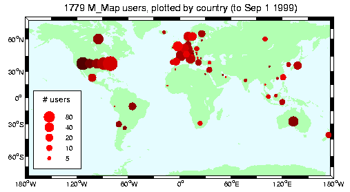

Announcing M_Map v1.2d!
- Routines to project data in 15 different spherical projections (and determine inverse mappings)
- A grid generation routine to make nice axes with limits either in lat/long terms or in planar X/Y terms.
- A coastline database (with 1/4 degree resolution)
- A global elevation database (1 degree resolution)
M_Map is now use at over 700 locations around the world!

New in release 1.2 are
- Built-in functions for drawing lines, text, and quiver plots in long/lat coords
- Built-in functions for contouring data (filled and line contours) in long/lat coords
- Hooks into a 5-minute global bathymetry ( TerrainBase ) available from the net.
- Fancy quiver plots (see last example)
- Gall-Peters projection (handy for large tropical areas)
- Fancy outline boxes! (see example 2 and example 6)
How to get M_Map
You can download the M_Map toolbox either as a gzipped tar-file , or as zip archive (Click on these links to download). Both are around 180k in size. Once you have this archive, read the Getting started section of the User's guide to correctly install this toolbox. If you want to see what you can do with M_Map, see some examples.
User's guide
- Getting started
- Specifying projections
- Coastlines and Bathymetry
- Customizing the axes
- Adding your own data
- More complex plots
- Adding your own coastlines
- Adding your own topography/bathymetry
- Using TerrainBase 5-minute global bathymetry/topography

- M_Map toolbox contents and description
- Known Problems and Bugs
- Changes since last release
Examples
M_Map Logo
m_proj('ortho','lat',48','long',-123');
m_coast('patch','r');
m_grid('linest','-','xticklabels',[],'yticklabels',[]);
patch(.55*[-1 1 1 -1],.25*[-1 -1 1 1]-.55,'w');
text(0,-.55,'M\_Map','fontsize',25,'color','b',...
'vertical','middle','horizontal','center');
set(gcf,'units','inches','position',[2 2 3 3]);
set(gcf,'paperposition',[3 3 3 3]);
Lambert Conformal Conic projection of North American Topography
m_proj('lambert','long',[-160 -40],'lat',[30 80]);
m_coast('patch',[1 .85 .7]);
m_elev('contourf',[500:500:6000]);
m_grid('box','fancy','tickdir','in');
colormap(flipud(copper));
Stereographic projection of North Polar regions
% Note that coastline is drawn OVER the grid because of the order in which
% the two routines are called
m_proj('stereographic','lat',90,'long',30,'radius',25);
m_elev('contour',[-3500:1000:-500],'edgecolor','b');
m_grid('xtick',12,'tickdir','out','ytick',[70 80],'linest','-');
m_coast('patch',[.7 .7 .7],'edgecolor','r');

Interrupted Sinusoidal projection of World Oceans
Slongs=[-100 0;-75 25;-5 45; 25 145;45 100;145 295;100 290];
Slats= [ 8 80;-80 8; 8 80;-80 8; 8 80;-80 0; 0 80];
for l=1:7,
m_proj('sinusoidal','long',Slongs(l,:),'lat',Slats(l,:));
m_coast('patch','g');
m_grid('fontsize',6,'xticklabels',[],'xtick',[-180:30:360],...
'ytick',[-80:20:80],'yticklabels',[],'linest','-','color',[.9 .9 .9]);
end;
% The multiple maps trick is useful only with this projection. In order to
% see all the maps we must undo the axis limits set by m_grid calls:
set(gca,'xlimmode','auto','ylimmode','auto');
Oblique Mercator Projection with quiver and contour data
%% Nice looking data
[lon,lat]=meshgrid([-136:2:-114],[36:2:54]);
u=sin(lat/6);
v=sin(lon/6);
m_proj('oblique','lat',[56 30],'lon',[-132 -120],'aspect',.8);
subplot(121);
m_coast('patch',[.9 .9 .9],'edgecolor','none');
m_grid('tickdir','out','yaxislocation','right',...
'xaxislocation','top','xlabeldir','end','ticklen',.02);
hold on;
m_quiver(lon,lat,u,v);
xlabel('Simulated surface winds');
subplot(122);
m_coast('patch',[.9 .9 .9],'edgecolor','none');
m_grid('tickdir','out','yticklabels',[],...
'xticklabels',[],'linestyle','none','ticklen',.02);
hold on;
[cs,h]=m_contour(lon,lat,sqrt(u.*u+v.*v));
clabel(cs,h,'fontsize',8);
xlabel('Simulated something else');

Miller Projection with Great Circle
% Plot a circular orbit
lon=[-180:180];
lat=atan(tan(60*pi/180)*cos((lon-30)*pi/180))*180/pi;
m_proj('miller','lat',82);
m_coast('color',[0 .6 0]);
m_line(lon,lat,'linewi',3,'color','r');
m_grid('linestyle','none','box','fancy','tickdir','out');
Lambert Conformal Projection with high-resolution bathymetry of Western Mediterranean
m_proj('lambert','lon',[-10 20],'lat',[33 48]);
m_tbase('contourf');
m_grid('linestyle','none','tickdir','out','linewidth',3);
Demonstration of fancy vectors
m_vec % See code in m_vec.m for details

Last changed 14/May/1998. Questions and comments to rich@ocgy.ubc.ca